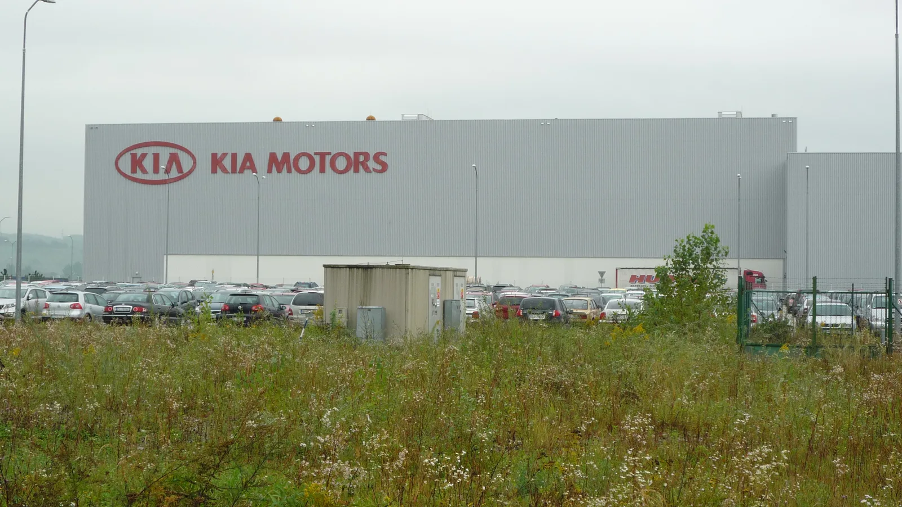
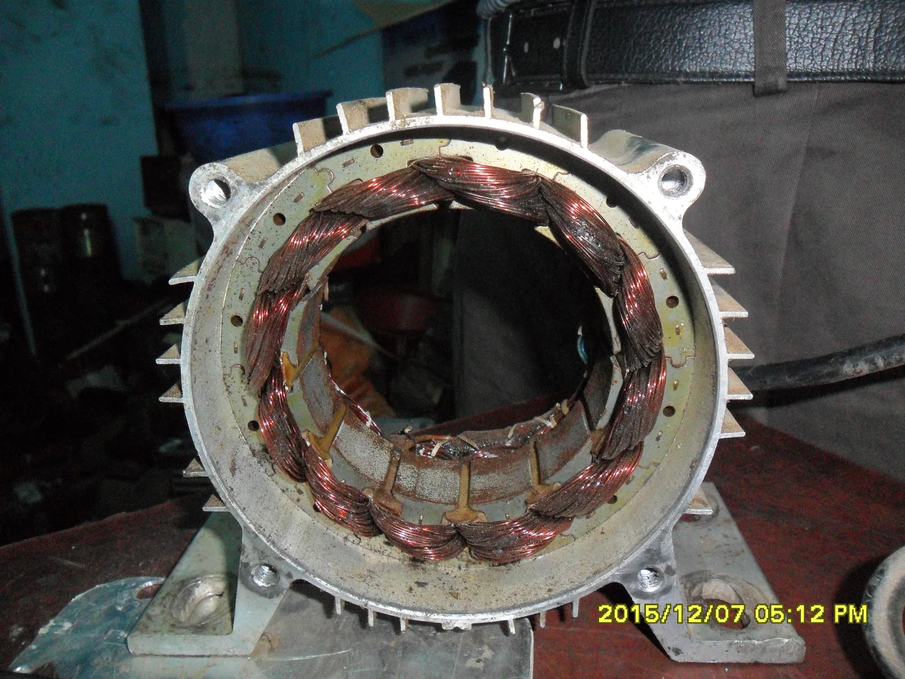

▲ 현대모비스가 새 PE시스템 공장을 세운 노바키가 아닌, 슬로바키아에 위치한 기아 완성차 공장(질리나) 사진이다. 실제 현대모비스 노바키 공장 사진이 아니라 슬로바키아 자동차 산업 현황을 보여주는 참고 이미지다
자동차에서 엔진과 변속기가 사라지면 그 자리를 무엇이 채울까. 답은 이미 정해져 있다. 전기 모터와 인버터, 감속기를 하나로 묶은 PE시스템(Power Electric System)이다. 흔히 '전기차의 심장'으로 불리는 이 부품을, 현대모비스가 처음으로 유럽 땅에서 직접 만들기 시작했다.
현대모비스는 지난 2일(현지시간) 슬로바키아 트렌친주 노바키에서 신공장 가동 기념행사를 열었다. 이규석 현대모비스 사장, 로베르트 피초 슬로바키아 총리, 데니사 사코바 부총리 겸 경제부 장관 등 100여 명이 참석했다.
1. PE시스템이 뭐길래 — 전기차의 엔진룸을 대신하는 부품
PE시스템은 전기 모터와 전류 전환장치인 인버터, 그리고 감속기를 하나의 모듈로 통합한 전동화 구동장치다. 배터리에서 나오는 전기 에너지를 바퀴를 굴리는 동력으로 바꿔주는 역할을 하며, 내연기관차의 엔진과 변속기를 합쳐놓은 것과 같은 위치에 있다. 전기차 성능·주행거리·효율을 좌우하는 핵심 부품인 만큼, 완성차 업체 입장에서는 안정적인 공급망 확보가 사업의 성패를 가르는 변수가 된다.
이번에 가동한 노바키 공장은 부지 면적 약 10.6만㎡(축구장 15개 크기), 연면적 8,500㎡ 규모로 지어졌다. 현대모비스는 이곳에 약 2,500억 원을 투자했으며, 모터의 핵심 부품인 스테이터(고정자)와 인버터 등 생산라인을 갖춰 연간 최대 28만 개의 PE시스템을 만들어낼 수 있다.

▲ PE시스템의 핵심 부품인 스테이터(고정자)는 코일이 감긴 원통형 구조로, 전류가 흐르면 회전 자기장을 만들어 모터를 구동시킨다 (일반 산업용 모터 스테이터 예시)
2. 왜 하필 슬로바키아인가
슬로바키아는 인구 500만 명 남짓의 작은 나라지만, 유럽에서 손꼽히는 자동차 생산 밀집국이다. 기아가 2004년부터 질리나(Žilina)에 완성차 공장을 운영하며 유럽 첫 생산거점으로 삼았고, 인근에는 폭스바겐, 스텔란티스(옛 푸조시트로엥) 공장도 자리하고 있다. 완성차 업체들이 몰려 있다 보니 부품 조달 거리를 최소화하려는 부품업체들에게도 자연스러운 진출지로 꼽혀왔다.
현대모비스에도 슬로바키아는 낯선 땅이 아니다. 이미 체코와 스페인에서 배터리시스템어셈블리(BSA)를 양산하며 유럽 전동화 부품 공급망을 넓혀온 만큼, 노바키 공장은 이 두 거점에 이은 유럽 3번째 전동화 생산기지로 자리매김한다. 완성차 조립 라인과의 물리적 거리를 좁히면 부품 운송 시간과 물류비를 절감할 수 있고, 현지 완성차 업체의 수요 변화에도 훨씬 빠르게 대응할 수 있다.
🏭 현대모비스 유럽 전동화 생산거점
- 체코 — 배터리시스템어셈블리(BSA) 양산 (기존)
- 스페인 — 배터리시스템어셈블리(BSA) 양산 (기존)
- 슬로바키아 노바키 — PE시스템 양산, 유럽 첫 가동 (신규, 2026년 9월)
3. 관세 장벽과 중국발 경쟁 — 현지화가 필수가 된 이유
유럽 완성차·부품업계가 일제히 현지 생산 비중을 늘리는 배경에는 관세와 공급망 안보라는 두 가지 압박이 함께 작용하고 있다. EU는 2024년 7월부터 중국산 전기차에 최대 35.3%에 달하는 징벌적 상계관세를 부과했는데, 이후 오히려 BYD를 비롯한 중국 업체들이 헝가리 등 동유럽에 직접 공장을 짓는 방식으로 관세 장벽을 우회하려는 흐름이 뚜렷해졌다. 완성차뿐 아니라 배터리·전장·구동부품 공급망 전반으로 경쟁 구도가 확대되면, 현대모비스 같은 기존 부품업체들도 신규 수주 경쟁에서 밀리지 않기 위해 유럽 현지 생산 역량을 서둘러 갖춰야 하는 상황이다.
여기에 한국에서 유럽까지 부품을 실어 나르는 물류비와 리드타임 부담도 무시할 수 없다. 완성차 업체 입장에서도 현지에서 즉시 조달 가능한 부품 공급망이 있어야 재고 부담을 줄이고 생산 계획을 유연하게 짤 수 있다. 결국 노바키 공장은 단순한 증설이 아니라, 유럽 전동화 시장에서 살아남기 위한 방어 겸 공세 전략인 셈이다.

▲ 현대모비스는 노바키 공장에서 생산한 PE시스템을 현대차·기아뿐 아니라 폭스바겐 등 글로벌 완성차에도 공급할 계획이다
4. 현대차·기아를 넘어 — 폭스바겐, 스텔란티스, 볼보까지
이번 신공장에서 가장 눈에 띄는 대목은 공급 대상이 현대차·기아에 국한되지 않는다는 점이다. 현대모비스는 노바키 공장에서 생산하는 PE시스템을 현대차, 기아는 물론 폭스바겐, 스텔란티스, 볼보 등 글로벌 완성차 업체에도 공급할 예정이라고 밝혔다. 이규석 사장은 가동식에서 "노바키 PE시스템 공장을 유럽 전동화의 핵심 거점으로 확고히 안착시킬 것"이라며 "글로벌 자동차 제조사의 전략 모델들이 이곳 부품을 탑재해 유럽 시장을 주도할 것"이라고 말했다.
이는 현대모비스가 추진해온 비계열사(글로벌 고객) 매출 확대 전략과 맞닿아 있다. 현대모비스는 2033년까지 계열사가 아닌 글로벌 완성차로부터 벌어들이는 매출 비중을 40%까지 끌어올리겠다는 중장기 목표를 제시한 바 있다. 현대차·기아라는 안정적 물량에 안주하지 않고, 부품 전문기업으로서 독자적인 수주 경쟁력을 갖추겠다는 의미다. 유럽 완성차 업체들의 전동화 라인업 확대 흐름 속에서, 현지 생산 기반을 갖춘 부품업체는 조달 우선순위에서 유리한 위치를 점할 수 있다.

▲ 볼보 역시 현대모비스가 노바키 공장에서 PE시스템을 공급하기로 한 글로벌 완성차 고객사 중 하나로 거론된다
5. 울산부터 노바키까지 — 현대모비스의 전동화 생산 지도
현대모비스는 국내외에 걸쳐 전동화 부품 생산 거점을 촘촘히 넓혀왔다. 국내에서는 울산·대구·충주·평택에서 배터리시스템, 구동모터 등 핵심 부품을 만들고 있고, 해외에서는 미국, 체코, 스페인, 인도네시아에 이어 이번에 슬로바키아가 새로 추가됐다. 노바키 공장은 이 글로벌 생산망에서 유럽 지역 PE시스템 공급을 전담하는 역할을 맡는다.
| 거점 | 주요 생산 품목 | 비고 |
|---|---|---|
| 한국(울산·대구·충주·평택) | 배터리시스템, 구동모터 등 | 국내 핵심 생산기지 |
| 미국 | 전동화 부품 | 북미 완성차 대응 |
| 체코 | 배터리시스템어셈블리(BSA) | 유럽 첫 전동화 거점 |
| 스페인 | 배터리시스템어셈블리(BSA) | 유럽 두 번째 거점 |
| 슬로바키아(노바키) | PE시스템(모터·인버터·감속기) | 유럽 세 번째 거점, 2026년 9월 가동 |
| 인도네시아 | 전동화 부품 | 동남아 신흥시장 대응 |
이런 다변화된 생산망은 특정 지역의 수요 변화나 통상 리스크에 흔들리지 않고 공급을 이어가기 위한 포석이다. 완성차 업체 입장에서도 여러 대륙에 생산기지를 갖춘 부품사와 거래하면 공급 안정성을 확보할 수 있어, 장기적으로 현대모비스의 수주 경쟁력을 높이는 요인으로 작용할 전망이다. 현대모비스의 최근 국내 제조 혁신 행보는 AI 활용 제조 경쟁력 강화 기사에서 확인 가능합니다.
6. 남은 과제 — 안착과 확장 사이
신공장 가동은 시작일 뿐이다. 연간 28만 개라는 생산능력을 실제 수주로 채워내는 것이 관건이다. 폭스바겐, 스텔란티스, 볼보 등과의 공급 계약이 어느 규모로, 어떤 시점에 구체화되는지가 노바키 공장의 실질적 성패를 가를 변수다. 아울러 유럽 내 전기차 수요 증가 속도, 각 완성차 업체의 전동화 전환 일정과도 맞물려 있어 단기간에 가동률을 끌어올리기는 쉽지 않을 수 있다.
그럼에도 이번 가동은 상징적 의미가 크다. 국내 부품업체가 유럽 한복판에서 완성차 업체들과 나란히 경쟁하며 '전기차의 심장'을 직접 공급하겠다고 선언한 것이기 때문이다. 현대모비스가 2033년 비계열사 매출 비중 40%라는 목표를 실제로 달성할 수 있을지, 노바키 공장의 수주 실적이 그 첫 시험대가 될 전망이다.